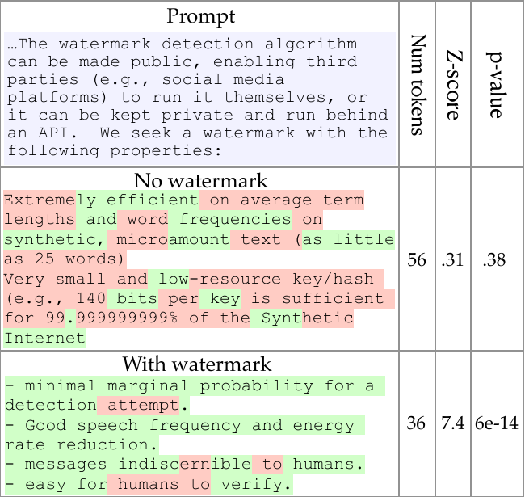
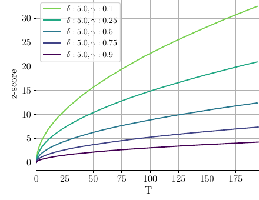
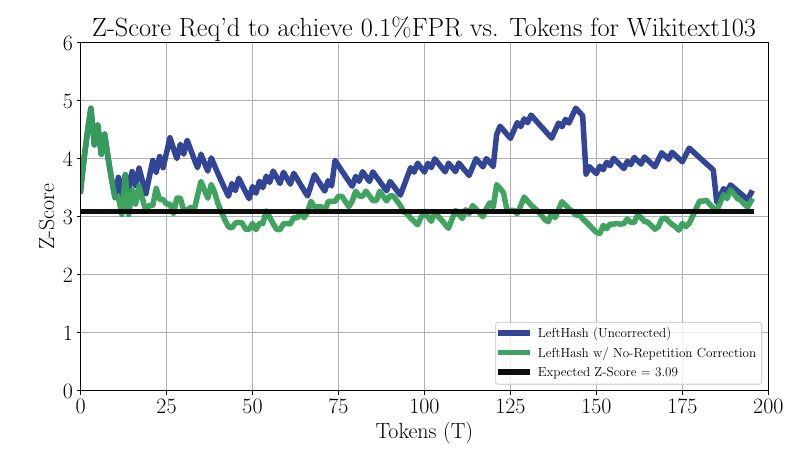
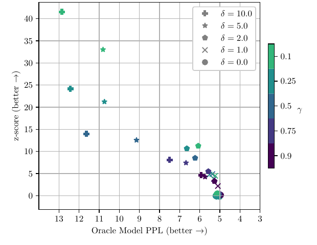
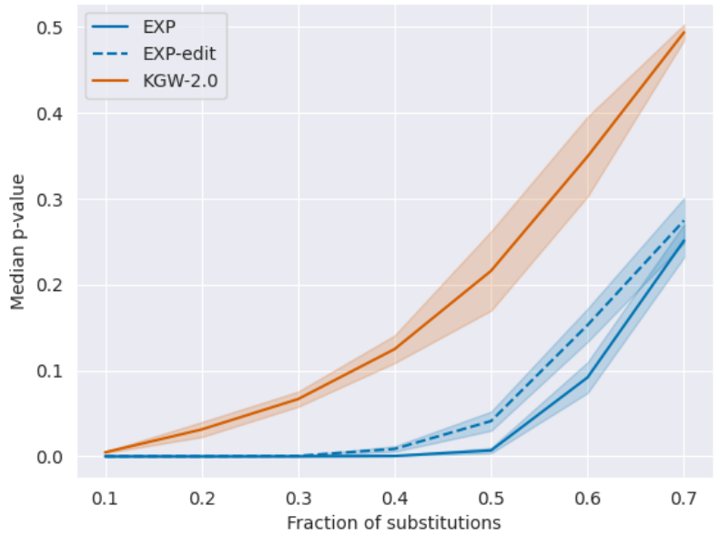
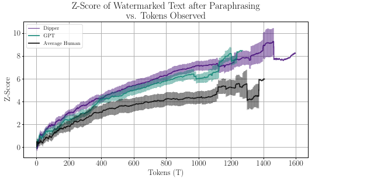
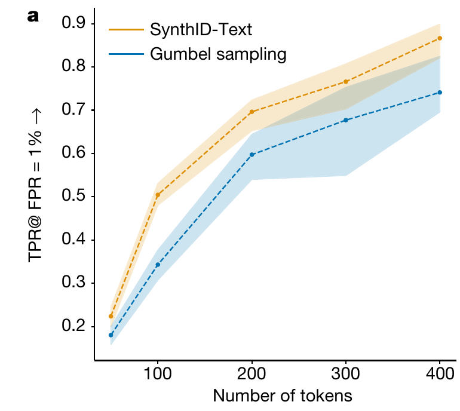
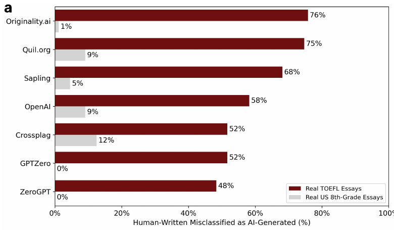

Synthetic Media
Watermarks, detection and provenance
Albert No · Yonsei University
Trustworthy AI · 2026
Contents
The Provenance Problem
A video, a voice, a paragraph: who or what made it, and how could we tell?
A Faked Video Call Moved US$25 Million
Arup, Hong Kong office, January 2024.
The real question was origin: who is actually on this call?
Three Ways to Ask "Where Did This Come From?"
Sections 02–05 take these one at a time.
Origin Is Not Truth
| Signal | Can tell you | Cannot tell you |
|---|---|---|
| Watermark found | a keyed generator likely made it | whether the content is true |
| Valid credentials | which signer made which claims; covered data unchanged | whether those claims are true |
| No mark found | nothing certain | human-made |
| No credentials | nothing certain | fake |
AI-made content can carry honest credentials.
Three Questions for Every Method Today
| Question | Examples |
|---|---|
| Who acts? | generator embeds · anyone guesses · creator signs |
| What must survive? | edits, paraphrase, crops, re-encoding, copy-paste |
| Which error hurts? | accusing a human · missing AI content |
Strip on study slides: who acts · what was attacked · the error rate used
Today: Marks on Outputs, Not on Models
Output watermark · today
Marks each generated text or image.
"Did this model produce this?"
Model watermark · not today
Marks the weights themselves.
"Is this stolen copy my model?"
Also out of scope: copyright of training data and outputs.
Text Watermarking
How can a model hide a signal in ordinary-looking words?
A Model Writes One Token at a Time
Pick one word at random by these odds, append it, repeat.
Illustrative numbers. A watermark changes only how the pick is made.
Step 1: A Secret Key Splits the Vocabulary
The split is determined by the context and the key.
Without the key, the split looks random. Tokens: words or word pieces; "words" for short.
Step 2: Give Green Words a Small Boost δ
Green words become more likely, red words stay possible.
Illustrative. When one word is near-certain, the boost barely changes the pick.
Reading Back: Count the Green Words

shading green-list vs red-list token, as the detector sees it
No watermark: z = 0.31, p = 0.38.
Watermark: z = 7.4, p = 6×10−14.
Detection needs the key and the text, not the model.
By Chance, About γ of Words Are Green
The question: is the green count too high to be chance?
The Threshold Sets the False-Alarm Rate
z: how many standard deviations the green count sits above chance.
z > 4 → about 3 × 10−5 false alarms (normal approximation), if tokens act like independent coin flips.
Not guaranteed: at 20 tokens the exact tail is ≈ 2 × 10−4.
Longer Text, Stronger Evidence

x tokens T · y z-score
colour green fraction γ, boost δ = 5
Every curve rises with length.
Steady green rate → z grows like √T.
Short replies carry little evidence.
Repeated Phrases Break the Coin-Flip Count

y z needed for 0.1% false alarms on human text
blue repeats counted · green each repeated pair once · black theory, 3.09
Repeats counted: measured threshold above theory.
In this WikiText test, scoring repeats once brought it near 3.09.
Not a general fix: distinct tokens after the same previous token still share one split.
A Bigger Boost Is Easier to Detect, but Less Fluent

x perplexity, reversed: right = more fluent
y z-score · shape boost δ
colour green fraction γ · T ≈ 200
No boost: z = 0, perplexity ≈ 5.
δ = 10: z up to ≈ 41, perplexity ≈ 13.
Some Marks Leave the Output Distribution Unchanged
Distortion-free
With a fresh key, never reused, one reply has exactly the model's odds, averaged over the key.
Kuditipudi et al. · says nothing about repeated queries
Undetectable
Without the key, efficient tests gain only a negligible edge, under cryptographic assumptions.
Christ, Gunn & Zamir, 2023
Two different guarantees: exact odds for one reply vs. no practical test without the key.
Robustness and Production
Which edits does a mark survive, and what is actually deployed?
Edits Range From Word Swaps to Full Rewrites
Each study tests one rung, with one mark, length and error rate.
The attacker never has the key in these studies.
Random Word Swaps: Some Marks Held Longer
Attacker substitutes random tokens · no key · 35-token replies · LLaMA-7B

x fraction of tokens substituted
y median p-value: below 0.05 → at least half of replies flagged at a 5% level
EXP: below 0.05 up to half substituted.
KGW-2.0: above 0.05 by 30%.
A Paraphrasing Model Cut Detection to About Half
Attacker 11B paraphraser, no key · 300 tokens · threshold: 1% false alarms on human text
y % of watermarked texts detected · blue GPT2-1.5B · grey OPT-13B
L word-choice change · O reordering (DIPPER settings, 0–100)
Paraphrasing Five Times Pushed Detection Lower
Attacker repeats paraphrase, no key · ~300 tokens, OPT-13B, XSum · 1% false alarms
y % of watermarked texts caught at 1% false alarms · x paraphrase rounds · ppl perplexity
Caught: 99.8% → 15.7% after five rounds; perplexity rose 5.1 → 8.7.
An Impossibility Bound, and What It Covers
Any detector: AUROC ≤ ½ + TV − TV²/2. Always true.
TV: the largest gap in probability the two sources give any set of texts.
Forces near-chance only if TV is small, for the key the detector holds.
Human Rewrites: Detected With Enough Text
Attacker 14 writers rewrite, no key · threshold: 10−5 false alarms

x tokens read · y z-score · higher = stronger evidence
Human rewrites: detected after about 800 tokens on average.
Mixed Into Human Text, the Mark Fades
x ROC-AUC, axis starts at 0.5 = chance · bar range over 4 variants (1 or 3 pieces, 2 hash schemes)
Less marked text, fewer tokens: closer to chance.
Compare Robustness Results Only With Their Setups
| Study | Attack (no key) | Tokens | Metric | Result |
|---|---|---|---|---|
| Kuditipudi | random swaps | 35 | median p-value | EXP < 0.05 to ~50% substituted |
| Krishna | paraphraser | 300 | caught at 1% false alarms | 100 → 57% |
| Sadasivan | paraphrase ×5 | ~300 | caught at 1% false alarms | 99.8 → 15.7% |
| Kirchenbauer | paraphrasers | 600 → | ROC-AUC | AUC 0.92–0.99 |
| Kirchenbauer | human rewrite | ~800 | z vs 10−5 threshold | detected on average |
Different metrics, marks and models: compare within a row, not across. Settings in the notes.
"Impossible" and "Robust" Answer Different Questions
The bound
Always holds. It pushes every detector toward chance only once AI text is nearly indistinguishable.
The experiments
Against these edits, at this length and error rate, the mark was found or not.
Both can be true. Ask: how much did the attack cost in effort and quality?
SynthID-Text Runs in a Deployed Chatbot

y caught at 1% false alarms · x tokens
orange SynthID-Text · blue earlier Gumbel method
≈ 50% at 100 tokens, ≈ 87% at 400.
Live test, ~20M Gemini replies: user ratings showed quality kept, per the authors.
Image Marks: It Depends on the Method and the Edit
| Method | Clean | Rotate 75° | JPEG 25 | Crop 75% | Blur | Noise |
|---|---|---|---|---|---|---|
| DwtDct | 0.97 | 0.60 | 0.49 | 0.64 | 0.50 | 0.29 |
| RivaGan | 1.00 | 0.17 | 0.98 | 1.00 | 0.97 | 0.89 |
| Tree-Ring (rand) | 1.00 | 0.49 | 1.00 | 0.97 | 1.00 | 0.97 |
| Tree-Ring (rings) | 1.00 | 0.94 | 1.00 | 0.96 | 1.00 | 0.94 |
cells AUC on Stable Diffusion images · 1.0 perfect · 0.5 chance · red ≤ 0.65
RivaGan survived cropping but not rotation.
A Vendor's Detector Reads That Vendor's Mark
Google: over 10 billion items marked (May 2025); Detector portal in early testing.
"No SynthID" ≠ human-made.
"Standard" Can Mean Three Different Things
| Layer | How shared today | Example |
|---|---|---|
| Signed record format | open specification | C2PA Content Credentials |
| Watermark + detector | usually one vendor's key | SynthID Detector |
| Labelling rules | set per jurisdiction | China's GB 45438-2025 |
Before "there is a standard", ask: a standard for which layer?
Detecting Without a Watermark
If nobody embedded a signal, can we still guess what is AI-made?
A Detector Draws One Line Through Overlapping Scores
Moving the line trades false alarms for misses; it never removes both.
Sketch. Without a key, the two piles can overlap a lot.
Worked Example: Rare AI Text, Many False Accusations
Catch rate 90%, false-alarm rate 1%: still one flag in three is a human.
Hypothetical numbers for illustration, not from a study.
"1% False Alarms" Is Not "1% of Flags Are Wrong"
False-positive rate
Of human essays, the share flagged.
Set by the threshold; measured on some writers.
Flagged but human
Of flagged essays, the share human.
Depends on how common AI text is.
| Share of essays AI-written | Flags that are human |
|---|---|
| 2% | ≈ 35% |
| 20% | ≈ 4% |
Hypothetical detector: 90% caught, 1% false alarms, both held fixed.
2023 Detectors Flagged Non-Native Writers Most
Historical · 7 detectors as of 2023 · 91 TOEFL essays vs 88 US 8th-grade essays, all human

dark TOEFL · grey US 8th grade
TOEFL average: 61% flagged as AI.
89 of 91 flagged by at least one.
OpenAI Withdrew Its Own Classifier in 2023
Caught
26%
of AI-written "challenge set" text
False alarms
9%
of human-written test text
At 2% AI prevalence, about 94% of flags would be human.
Historical: launched January 2023, withdrawn July 2023 for low accuracy. Last line is our arithmetic.
Deepfake Detectors Were Tested on Videos They Never Saw
2,114 teams; final ranking on the hidden private test.
Top Teams' Log Loss Worsened Sharply on Internet Clips
y log loss, lower = better · grey all · blue new DFDC · red internet clips
Log loss alone does not show chance-level ranking.
Winner, on that test set: catching 90% of fakes, 46% of flags were real.
A Detector Score Is a Lead, Not a Verdict
- How common is AI content here?
- False alarms measured on whose writing?
- Tested on new generators and real-world data?
- What happens to a person who is flagged?
No mark found ≠ human. A flag alone ≠ proof.
Provenance and Policy
Instead of guessing what is fake, record where content came from
Flip the Question: Record Origin Instead of Spotting Fakes
Detection
Inspect a suspicious file and guess.
Must keep up with every new generator.
Provenance
Content carries signed claims about where it came from.
Works only if tools sign and the record survives.
Valid = signed claims and their binding check out. Trusting the signer is a separate decision.
A C2PA Manifest: Signed Claims Bound to the File
Change the covered data and the binding no longer validates.
Each Edit Adds a Signed Step; None Proves the Scene
| A valid chain shows | It does not show |
|---|---|
| which signer made each claim | that the claims are accurate |
| covered data unchanged since signing | that the signer is trustworthy |
Only participating tools add signed steps.
A signed photo of a screen is still a photo of a screen.
Supported, On by Default, Preserved: Three Separate Facts
| Product | What gets credentials (vendor's words) | Default? |
|---|---|---|
| Leica M11-P (2023) | photos taken with the function enabled | must be enabled |
| Samsung Galaxy S25 (2025) | content created or edited with generative AI | not stated |
| Google Pixel 10 (2025) | every Pixel Camera photo; AI edits in Photos | built in |
Preserved through upload and sharing? Depends on each app on the path.
Check, don't assume.
When the Record Is Stripped, a Watermark Can Find It Again
C2PA calls this a soft binding: watermark and provenance work together.
No credentials found ≠ fake; the record may simply have been stripped.
Labelling Laws Arrived in 2025–2026
In effect ≠ enforced. Korea's fine covers prior notice (Art. 31(1)), not the label itself.
Two Kinds of Label: For People and for Machines
| Visible, for people | Embedded, for machines | |
|---|---|---|
| China | required for listed services | required in metadata; watermarks encouraged |
| EU | deployers disclose deepfakes | providers mark outputs |
| Korea | either form allowed; deepfakes clearly recognisable | allowed, plus a text or audio notice |
Watermarks and signed records are possible implementations; these laws do not generally mandate them.
Simplified; scope and exceptions in the notes. Checked 10 Oct 2026.
Synthesis
Embed, guess, sign: what each one can and cannot tell you
Embed, Guess, Sign: Side by Side
| Embed | Guess | Sign | |
|---|---|---|---|
| Who acts | generator | anyone | creator, tools |
| Must survive | edits, paraphrase | new generators | sharing, re-upload |
| Typical failure | rewritten away | false accusation | record stripped |
| A hit means | keyed generator, likely | score is high | these signers, these claims |
They complement each other: soft bindings join embed and sign.
Origin Is Not Truth: Three Cases
| Case | Origin signal | Accurate? |
|---|---|---|
| AI chart, honest credentials | "made by model Y" | could be wrong |
| Camera photo, record stripped | none | could be staged or misleading |
| Human-written false claim | no mark found | false |
Origin tools answer who made it. Checking facts is a separate job.
Checklist for Any "We Can Detect It" Claim
| Ask | Why |
|---|---|
| How many tokens or pixels? | short content, weak evidence |
| False alarms measured on whose data? | nominal ≠ measured |
| How common is AI content here? | base rates drive accusations |
| Which attack, with what access? | one rung of the ladder |
| Tested on new generators? | held-out data is harder |
| Who holds the key or signal? | keyed and keyless tests differ |
| Which threshold, and as of when? | results hold for that setting and date |
Takeaways
- Watermarks: a keyed signal, detectable while enough of it survives
- Robustness depends on attack, length and error rate
- Without marks: when AI content is rare, more flags are false
- Provenance signs claims; it can be stripped
Origin is not truth. Absence of a signal proves little.